| ・ 日本光学会年次学術講演会 Optics & Photonics Japan 2017 Tokyo (H29.10.30-11.02) | |||
去年は3人発表でしたが，今年はM1のK保西くん1人です．光計測の研究で，「位相回復ホログラフィによる粒子奥行き位置の検出」をOPJ2017で発表しました．K保西くんのようにB4で見学に行く予定でしたが，急遽N谷くんは講習会参加でした． |
|||
|
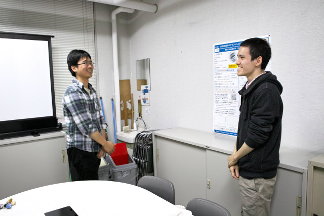
行く前に練習 |
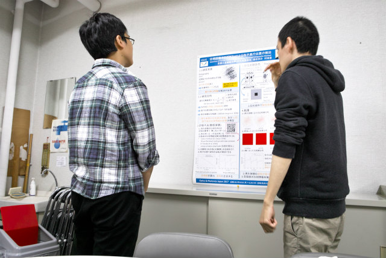
去年発表したM2のY岡くん | ||
|
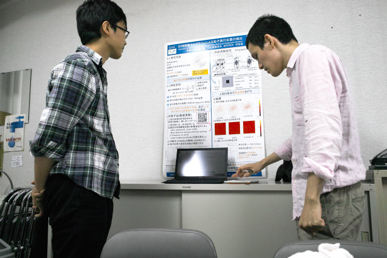
質問者役です |
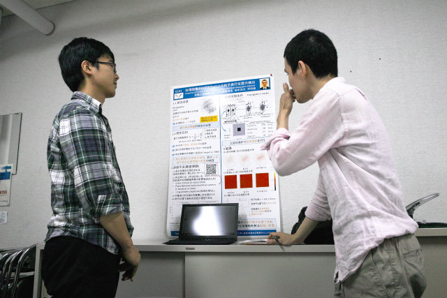
補足資料はPC | ||
|
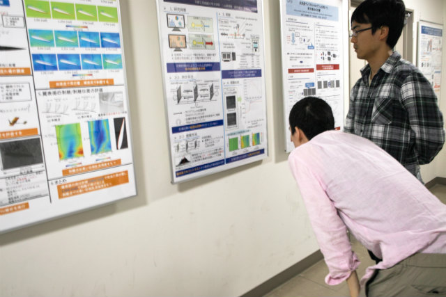
オレのはこんな感じ |
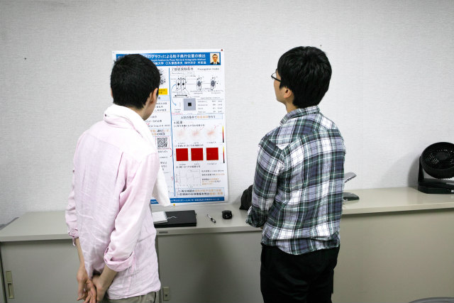
いろいろアドバイス | ||
|
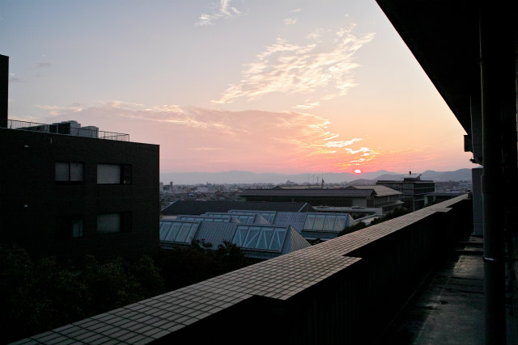
日が暮れていきます |
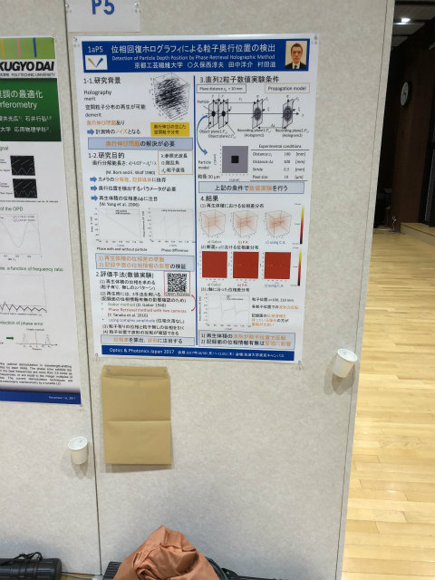
下の封筒は論文入れ | ||
|
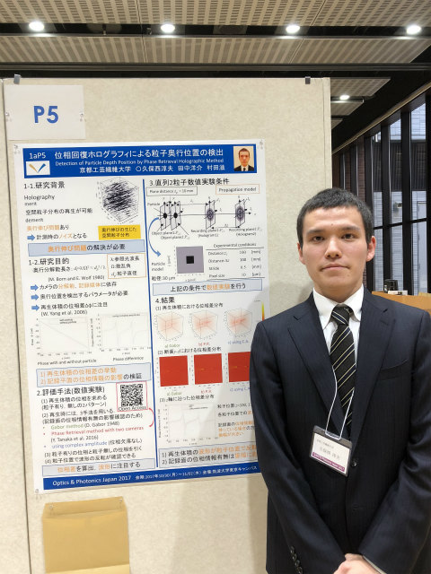
就活に使う予定 |
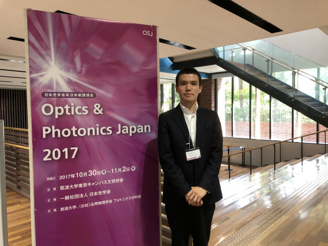
看板でも | ||
|
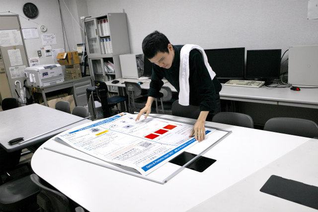
帰ってきたので |
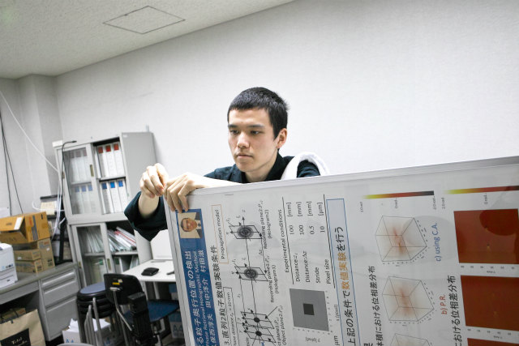
TN先輩のポスターの上に | ||
|
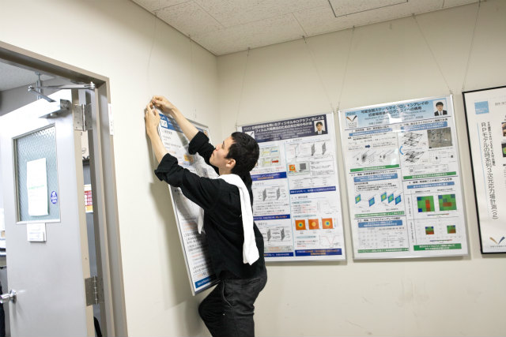
置きかえて |
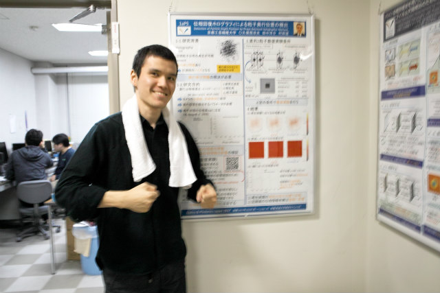
来年3月もポスターやります | ||